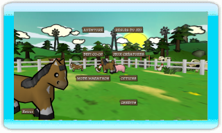

8 |
Menu Principal |
 |
|

Choisissez votre type de partie, ou sélectionnez le menu Options pour changer les réglages du jeu. Pour les parties multi-joueurs, chaque joueur doit posséder sa propre télécommande Wii.
Aventure - Voyagez autour du monde et mettez vos talents de constructeur de clôture à l'épreuve. Jouez seul ou avec un autre joueur à travers les 50 niveaux.
Défis Co-op - Jouez aux niveaux spécialement conçus pour des parties multi-joueurs à quatre. Utilisez votre ami pour faire éloigner cet ours en colère !
Mode Marathon - Dans ce jeu de type 1 ou 4 joueurs, un nombre quasi-infini de rencontres aléatoires de créatures vous attend. Jusqu'où pourrez-vous aller ?
Jeux de Créatures - Réunissez vos amis pour jouer à ces mini-jeux. Jusqu'à 4 joueurs peuvent participer, selon les jeux.
Comment Jouer - Les débutants sont invités à jeter un coup d'œil à ce tutoriel qui montre comment jouer à Critter Round-Up.
Options - Modifiez vos réglages audio et examinez les commandes ici.
Crédits - Découvrez les noms des gens qui vous ont préparé Critter Round-Up. |
 |
 |
 |